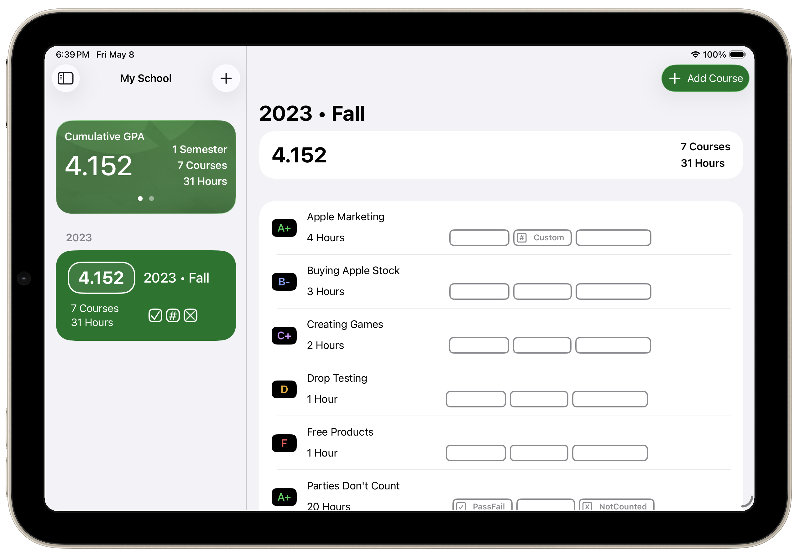
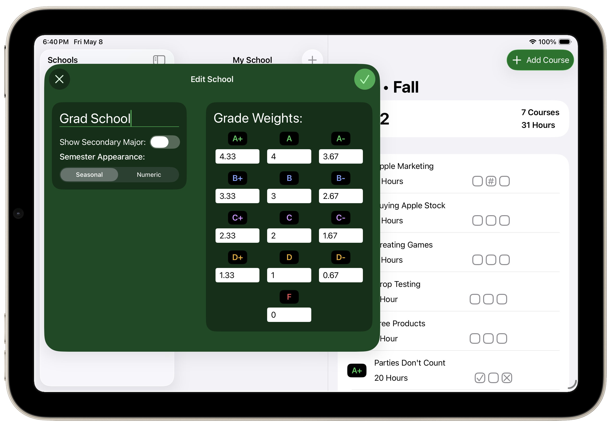
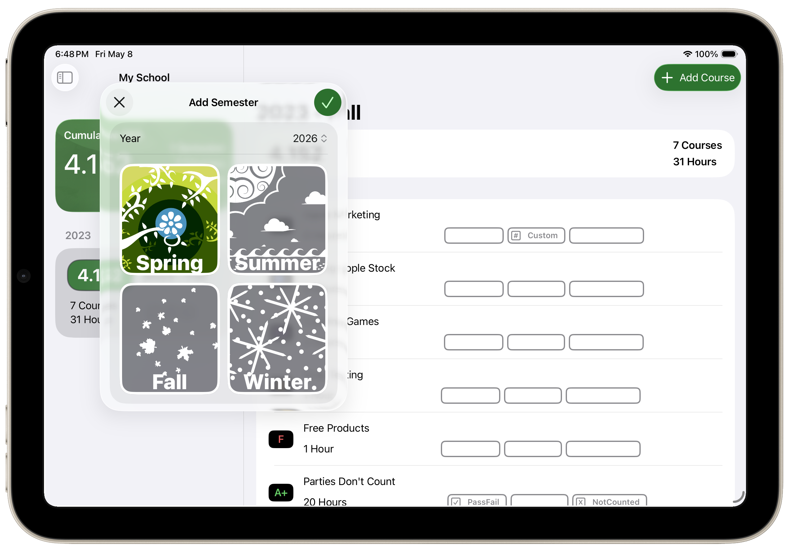

GPA Made Easy
Add semesters and courses, then get fast semester and cumulative GPA results without building a spreadsheet.
Fourpoint makes it easy to calculate semester and cumulative GPA across schools, courses, and iCloud-synced devices.


Add semesters and courses, then get fast semester and cumulative GPA results without building a spreadsheet.

Keep separate academic histories organized when your grading setup changes across schools or programs.

Keep your GPA data available across devices so course updates stay close at hand.